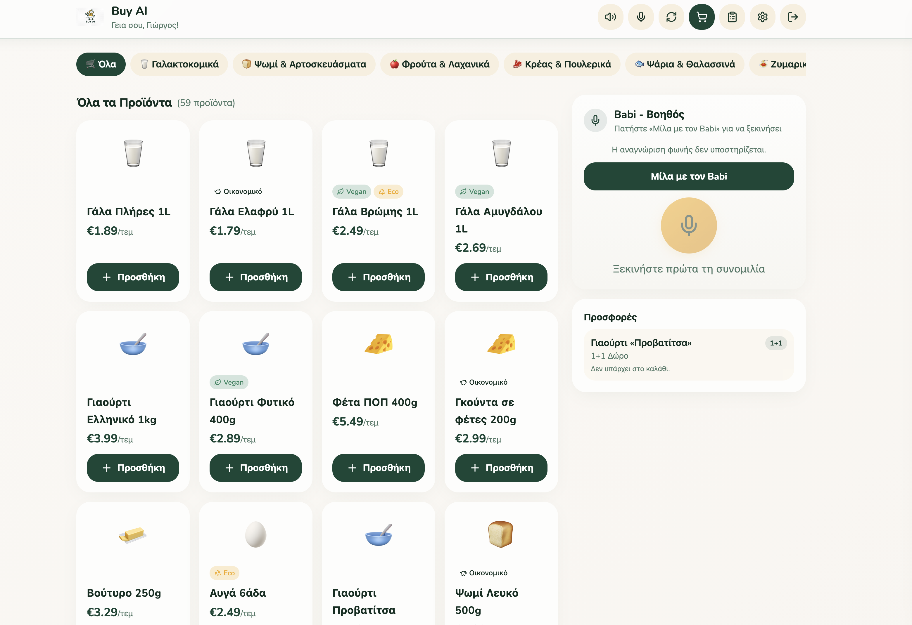

Babi
Buy AI — a voice-driven grocery assistant that shops smarter and healthier.
1 About
Babi is a lightweight LLM grocery assistant with two jobs: add items to your cart on voice command, and proactively flag price drops and offers on the things you buy. A separate voice-generation model lets Babi talk back, confirming out loud when it's added something to your cart. The product catalog leans into milk, yogurt, salads and other healthy staples — the goal of the service is to nudge people toward healthier meals while making the shopping itself faster and more budget-friendly, all through a simple, low-friction voice interface.
2 Preview
The Buy AI storefront, with Babi's voice assistant panel and live offers on the right.

3 Try it
Opens the shopping assistant in a new tab.